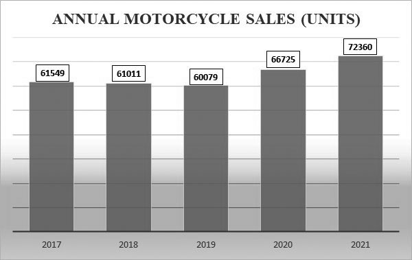

Motorcycle Sales - Canada
Although Canada is not the biggest country with motorcycle demand, it does match the increasing trend of sales worldwide. Below is an image from the MMIC (Motorcycle and Moped Industry Council) showing the sales throughtout 2017-2021.

The concept of autonomous motorcycles is a relatively new and exciting area of research and development. Autonomous motorcycles, also known as self-driving motorcycles, are vehicles that are equipped with sensors, cameras, and other technologies that allow them to operate without a human driver.
In developing countries, the growth in demand for motorcycles has been particularly pronounced. Many people in these countries are looking for affordable and efficient modes of transportation to navigate through congested cities and rural areas. Motorcycles offer a convenient and relatively inexpensive alternative to traditional cars, making them a popular choice for many people.
In developed countries, the demand for motorcycles has been increasing, albeit at a slower pace. Consumers are increasingly interested in recreational motorcycles, such as sports bikes and cruisers, as a way to enjoy leisure time and explore the outdoors. In addition, the rise of ride-sharing and delivery services has increased demand for motorcycles as a way to quickly navigate through busy urban areas.
The COVID-19 pandemic has also contributed to the increased demand for motorcycles in some regions. With public transportation systems disrupted and people seeking alternatives to crowded buses and trains, motorcycles offer a convenient and socially distanced mode of transportation.
In conclusion, the global demand for motorcycles has increased in recent years due to a combination of factors, including changing consumer preferences, improved affordability, and increased availability of financing options. While demand varies by region and market segment, the trend is expected to continue in the coming years.